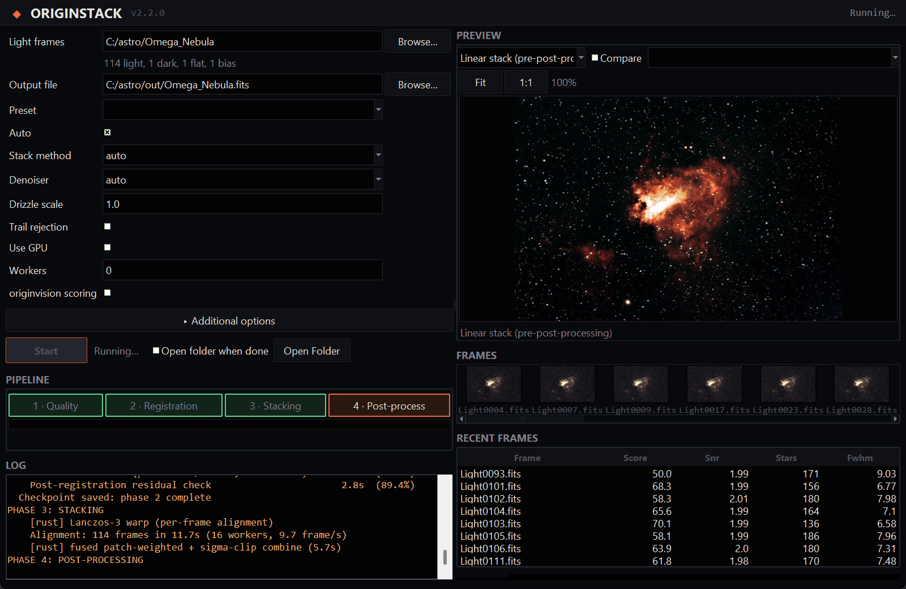
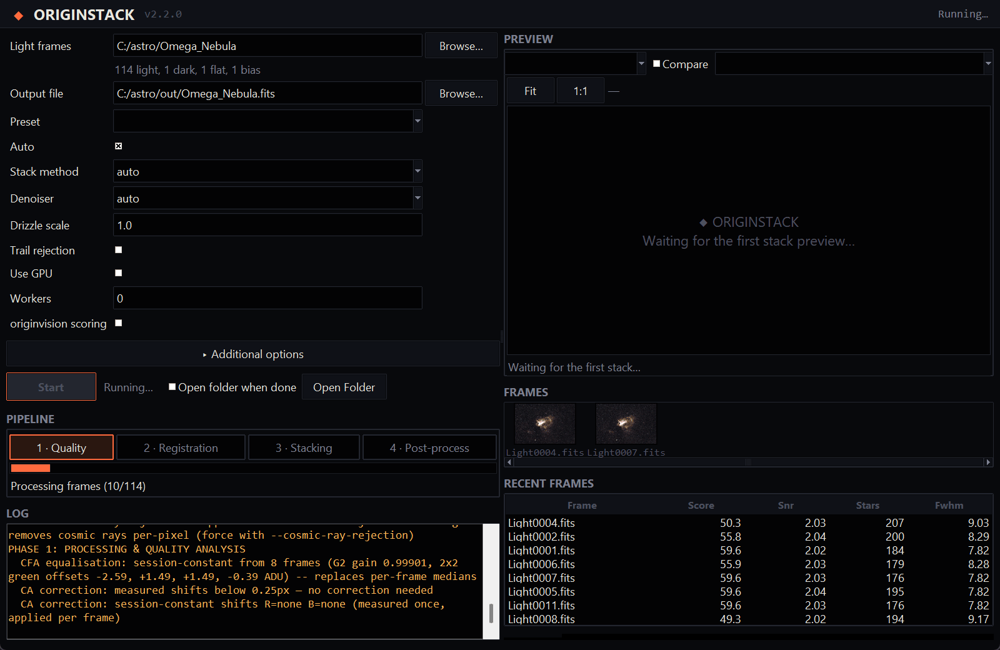
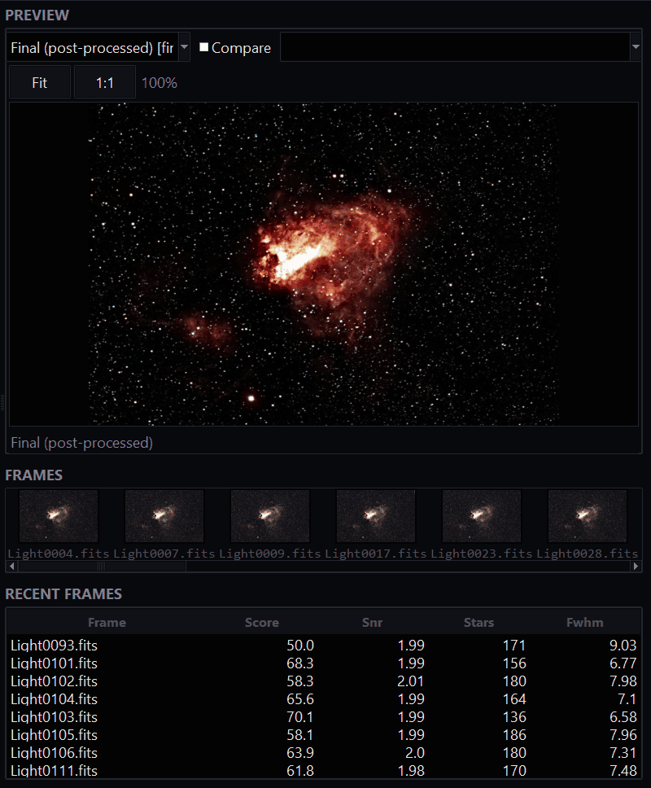
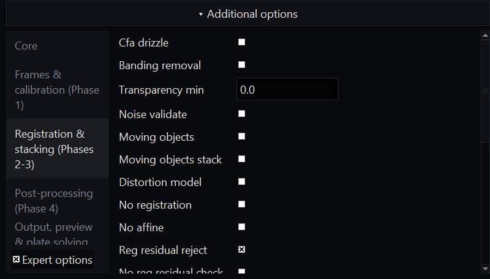
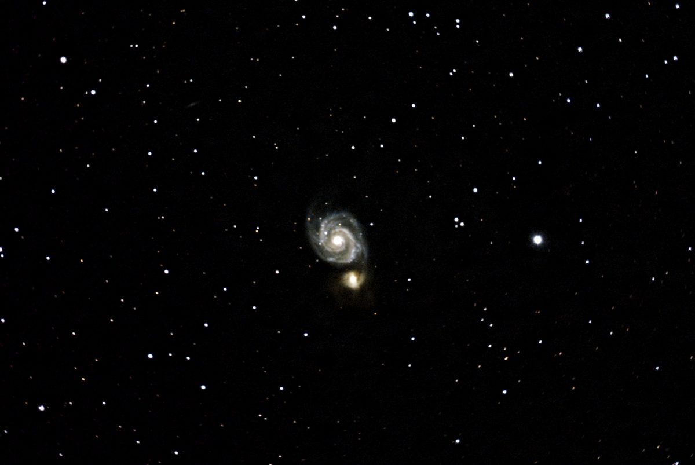
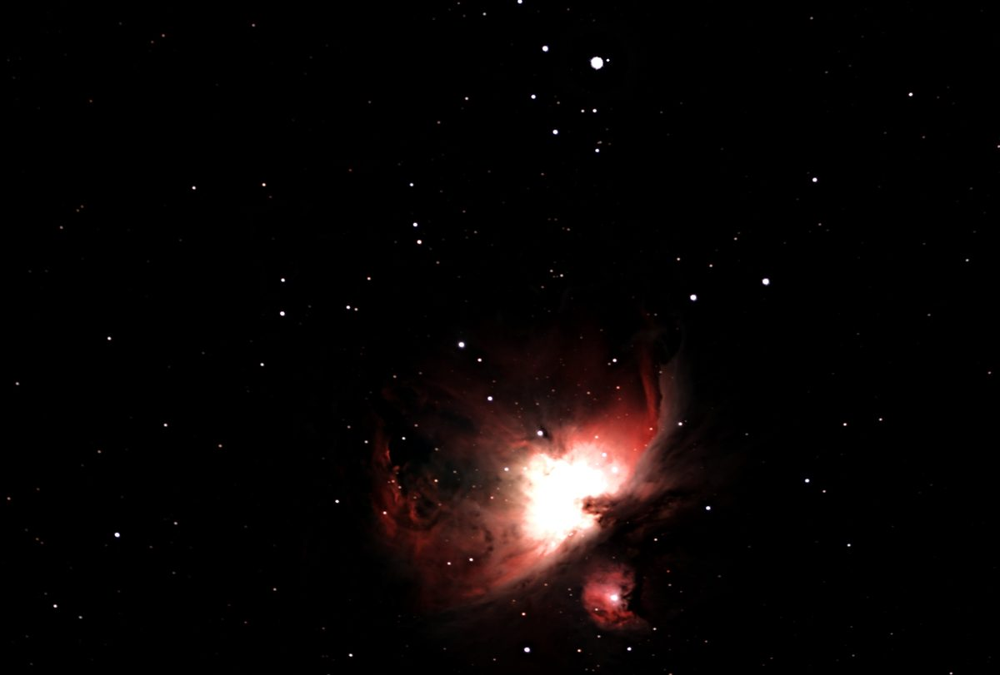
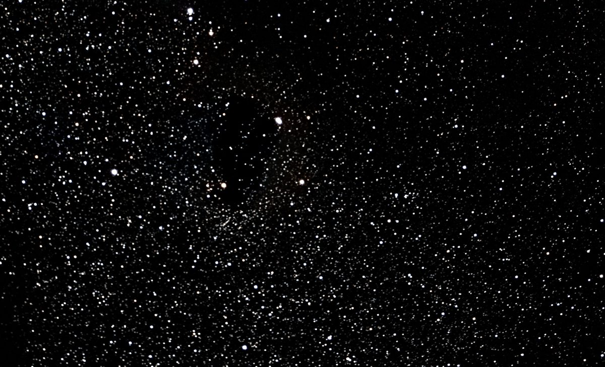

A night of frames in under two minutes
The Omega Nebula, 114 frames, on an 8-core desktop: 113 seconds from the raw files to a finished image. The red block is the part that makes the picture look good; the rest is getting 114 frames to line up.
- Load, calibrate, score24.8 s
- Register8.2 s
- Align and stack20.0 s
- Finish the image51.3 s
- Disk and setup8.8 s
Load, calibrate, score
Each frame is corrected with your bias, dark and flat, turned from the sensor's colour mosaic into an image, and scored for sharpness and noise. Frames that are clearly bad are dropped.
Register
Frames are lined up to a fraction of a pixel, including the slow rotation of the field that an alt-az mount like the Origin produces.
Align and stack
The aligned frames are combined with outlier rejection, so satellite trails, hot pixels and cosmic rays drop out instead of averaging in.
Finish the image
Background gradients, colour and noise are handled, then the result is stretched to be viewed. The FITS file it saves stays linear, ready for any further work.
Frames are processed one at a time, so 500 frames need about the same memory as 50. Temporary files take roughly 100 MB of disk per frame while the run is going.
Watch it work, or skip the settings
Point the app at a folder of frames and press Run. Every option is one form, and the defaults choose settings for your target. These are real screens from stacking the Omega frames above.




How it compares with Siril and DeepSkyStacker
Same frames, same bias, dark and flat, one machine, each tool on its default-style settings. Two Celestron Origin sessions: the Omega Nebula (114 × 30 s) and the Sunflower Galaxy (158 × 20 s).
Star sharpness (smaller is sharper)
Omega
Sunflower
| Omega | Sunflower | |
|---|---|---|
| OriginStack, stack only | about 60 s | about 78 s |
| OriginStack, finished image | about 113 s | about 126 s |
| Siril, stack only | 53 to 66 s | about 69 s |
| DeepSkyStacker | 14 min 8 s | not run |
Siril is as fast as OriginStack for a plain linear stack and faster on the Sunflower session; if you want nothing but that, use it. OriginStack's stars are tighter on both sessions, and at the same sharpness its noise is equal or lower. DeepSkyStacker ran at its defaults, and its result showed hot-pixel streaks and a few misregistered frames, so a tuned run would look better. Two sessions from one camera are a small sample. Full method and caveats are in the README, and tools/bench_vs_siril.py repeats the Siril comparison on your own frames.
Made with it
All from raw Celestron Origin frames, stacked and processed by OriginStack.



Install it
Windows installer
Download the setup file from the latest release and run it. It installs for your user only, adds a Start Menu entry and an uninstaller, and needs no Python.
Prefer the zip? Use Extract All first, then run OriginStack.exe from the extracted folder. Running it from inside the zip fails.
From source
On Windows, Linux (tested) or macOS (not tested):
git clone https://github.com/hd152/originstack cd originstack pip install -r requirements.txt python desktop_app.py
The command line does the same job: python originstack.py -d lights/ -o stacked.fits. An optional Rust extension speeds up the heavy steps and falls back to plain NumPy without it.
What else it does
Calibration with bias, dark and flat frames, hot-pixel and satellite-trail removal, sigma-clipping and other outlier-rejecting stacking methods, optional drizzle, background and gradient removal, noise reduction and deconvolution, plate solving, colour calibration, photometry and a comet mode. If you are looking for a free alternative to DeepSkyStacker or Siril for Celestron Origin and other one-shot-colour astrophotography data, this is built for that.
What it reads
Celestron Origin FITS, and colour-camera frames as FITS, camera RAW (Canon, Nikon, Sony and others, needs rawpy), TIFF and XISF. SER video is supported for planetary work. Mix formats freely in one folder.